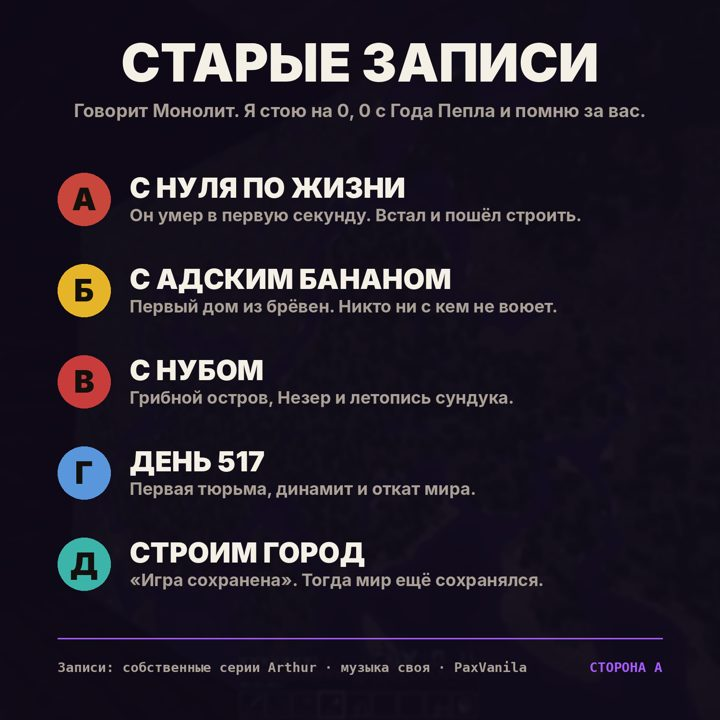

PaxVanila: Старые записи
Пролог к «Хронике фронта». Пять миров и пять цивилизаций, которые были до этого мира
Эти записи Страж-7 нашёл в архиве Монолита, в самом нижнем ящике, под «Хроникой фронта». На них нет печати «секретно», и подписаны они по-простому, рукой игрока: «с нуля по жизни», «с Адским Бананом», «с нубом». Страж-7 долго не хотел их показывать. Потом сказал: «Хроника фронта рассказывает, как они воевали. А эти записи рассказывают, откуда они пришли».
Что в них странного
Сначала Страж-7 думал, что все записи сняты в одном мире. Потом он сравнил небо, землю и ключи генератора и понял: это пять разных миров. В каждом жила своя цивилизация, у каждой был свой край земли, и ни один из этих миров не дожил до PaxVanila. От них остались только плёнки.
| Мир | Цивилизация | Запись | Где лежит сейчас |
|---|---|---|---|
| Мир Картографов | Одиночки, которые начали с нуля и первыми нарисовали карту | А. «С нуля по жизни» | за западной границей |
| Мир Деревни | Мирные строители: жили с жителями деревни и ни с кем не воевали | Б. «С Адским Бананом» | за северо-западной границей |
| Мир Чародеев | Искатели Незера; здесь впервые записали летопись сундука | В. «С нубом» | x 6855, z 6689 |
| Мир ZAG533 | Крепостники: стены, первая тюрьма, динамит и откат мира. «День 517» | Г. «Майн» | за северной границей |
| Мир Песчаного города | Градостроители пустыни: склад из рамок, синий зал, башня | Д. «Строим город» | за южной границей |
Ключ генератора виден прямо в одной из записей, и он не совпадает с ключом PaxVanila. В другой записи в углу экрана видно «День 517»: ни одна держава PaxVanila так долго не жила. А в списке миров первым стоит «Сервер ZAG533». Страж-7 думает, что ZAG533 это старое имя генерала Zaginsral, ещё до того, как он стал генералом.
«Я долго думал, кто такие Те, Кого Нет. Может быть, это они. Люди, которые жили в пяти мирах до нас, строили, воровали друг у друга железо и ничего не записывали в законы. Только на плёнку», Страж-7.
Запись А. «С нуля по жизни, день второй»: Мир Картографов
Длина записи больше часа. Начинается с надписи «Вы умерли!»
Это самая старая запись. Игрок начинает с нуля. Он умирает в первые секунды, встаёт и идёт строить.
- Сначала курятник за деревянным забором. Потом огород: морковь, пшеница, вода в канавке.
- Потом дом из берёзы и тёмного дуба: кровать, печь, сундук, верстак. Ничего лишнего.
- Потом лодка и выход в море, чтобы посмотреть, где кончается берег.
- И главное: на стене дома висит огромная карта всего мира. Она собрана из десятков карт. На ней виден материк с извилистыми реками, большие заливы, острова и прямые дороги к деревням. Это первая карта в истории, которую нарисовал игрок, а не Монолит.
В середине записи происходит странное. Камера вдруг начинает видеть сквозь землю: в темноте висят красные и зелёные контуры блоков, как чертёж. В углу записи бегут слова на непонятном языке: Velocity, NoFall, Trajectories. Страж-7 честно говорит, что не знает, что это. «Может быть, язык Безымянных. А может быть, кто-то просто смухлевал. В третьей записи Хроники генерала тоже назовут читером».
Что из этого вынес PAX: у каждой державы должна быть своя карта. Поэтому на сайте PaxVanila есть общая карта мира, и её видят все.
Запись Б. «С Адским Бананом»: Мир Деревни
Две записи: короткая, на 4 минуты, и длинная, почти на полчаса.
В записи два игрока. Второго зовут Адский Банан. Это прозвище, и откуда оно взялось, Хроника не говорит.
Короткая запись. Утро в деревне жителей. Игроки ходят между домами, заглядывают в сундуки и торгуются с жителями. У колодца стоит железный голем. Никто ни с кем не воюет.
Длинная запись. Игроки уходят из деревни в поле и строят свой первый дом из брёвен и досок. Сначала каркас, потом стены, потом крыша. Работают до заката. Последний кадр снят на красном небе: дом стоит, факел горит.
«Это единственная запись, где никто никого не убил. Я смотрю её, когда устаю от войн», Страж-7.
Что из этого вынес PAX: новичкам нужно спокойное место для старта. Отсюда в лоре выросли 48 часов защиты новичка и мирная Башня на 0, 0.
Запись В. «С нубом»: Мир Чародеев
Длина около получаса. Деревня, грибной остров, Незер.
Игрок водит новичка по миру. Они проходят деревенский дом с сундуками, плывут к грибному острову с огромными красными грибами и спускаются в Незер. Там они долго ходят в красной темноте.
Самое важное в этой записи это журнал. Посреди записи на экране открывается летопись сундука, и в ней чёрным по белому написано:
- Место: x 6855, z 6689. Это ещё дальше, чем Дальний сектор.
- ZAG533 забрал 64 лазурита.
- ZAG533 забрал 24 золотых слитка.
- ZAG533 положил и снова забрал железо, и так несколько раз за сутки.
Сразу под журналом идут две строки: «ZAG533 был убит 055das__», и ещё раз то же самое. А потом: «055das__ получил достижение "Чародей"».
Страж-7 считает, что это первое расследование в истории. Кто-то пришёл к сундуку, открыл летопись и проверил, кто что взял. Через год, в «Гулаге и порохе», генерал так же будет искать пропавший порох. Только в тот раз летописи под рукой не было.
Кто такой 055das__, неизвестно. Он дважды победил будущего генерала и сразу стал Чародеем. Больше его имя нигде не встречается.
Что из этого вынес PAX: у каждого сундука должна быть летопись. На сервере PaxVanila это делает CoreProtect: любой спор о краже решается по журналу.
Запись Г. «Майн»: Мир ZAG533, День 517
Самая длинная запись, два часа. Сервер ZAG533, версия мира 1.16.1, в углу «День 517».
Это запись уже не о выживании, а о жизни города.
- Деревня с каменными стенами. На улицах торговые лавки, у домов стоят сундуки. По деревне ходит Telorfind в алмазной броне. Ещё до войны он здесь сосед, а не враг.
- Решётка и огонь. В одном из домов есть клетка из железных прутьев, а за ней горит огонь. Страж-7 уверен: это первая тюрьма. Через год такая же решётка станет Гулагом Дальнего сектора.
- «Я хочу новую крепость тоже». Эти слова Telorfind пишет в чат, стоя у сундуков. Генералу крепость, и Telorfind тоже хочет крепость. С этой фразы в Хронике начинается соперничество.
- Поход под воду. Игроки ныряют к подводному храму и ломают его стены из губки и призмарина.
- Каменный замок. Над рекой поднимается замок с башнями и мостом.
- ТНТ. В конце записи в кадре ящик динамита. Потом взрыв, и пол-замка превращается в воронку.
- Откат. После взрыва чат заполняют строки: «Modified 1/26 chunks… 2/26… 10/26…». Мир сам возвращается назад, блок за блоком. Замок снова стоит, будто взрыва не было.
«Это я помню лучше всего», говорит Страж-7. «Взрыв, а потом время идёт назад. В нашем мире так уже нельзя. Поэтому у нас есть закон: город нельзя снести в ноль».
Что из этого вынес PAX: раз мир больше не умеет откатываться сам, его нужно беречь. Это вторая половина закона «анти-руины».
Запись Д. «Строим город»: Мир Песчаного города
Самая большая запись, тоже два часа. Это прямой эфир: в углу экрана видно, как зрители присылают по два-четыре рубля.
Здесь уже не выживают, здесь строят город. Стоит он у пустыни на берегу моря.
- Склад со стеной из рамок. Вся стена от пола до потолка увешана рамками, и в каждой висит предмет: морковь, железо, кирпичи, изумруды. Под каждой рамкой стоит свой сундук. Это первый склад, где сразу видно, что где лежит.
- Синий зал. Пол выложен синим и голубым бетоном, стены сделаны из призмарина, светятся морские фонари. Похоже на подводный храм, только построенный своими руками и на суше.
- Башня из песчаника. Над пустыней стоит многоэтажная башня с окнами в каждом ярусе. Внутри коридоры, лестницы и двери.
- Карта на столе. В синем зале лежит карта: жёлтый материк пустыни, зелёный лес и синее море. С неё начинается планировка города.
- Обсидиановые комнаты. Под землёй строители долго ломают и ставят обсидиан. Что они там делали, запись не объясняет.
- Таблички у входов. На стенах висят таблички с подписями, куда ведёт каждый вход.
Сервер то и дело пишет в чат: «Игра сохранена». Страж-7 говорит, что это самые важные слова во всех старых записях. «Мир тогда сохранялся сам. Потом настал день, когда он не сохранился».
Что из этого вынес PAX: у города должен быть план, склад и вход, который видно издалека. Из этой записи в лоре выросла идея порта и рынка в каждой столице.
Эту запись Страж-7 потом расшифровал целиком: таблички, Белый дом, закон «килл и +суд» и уход на лодке. Читайте главу Город Дубай.
Запись Е. «Супер-пушка ТНТ»: Полигон
Запись прямого эфира, почти час. Первые пять минут на экране только надпись «СТРИМ СКОРО НАЧНЕТСЯ».
Страж-7 долго не знал, куда положить эту плёнку. Это не шестой мир: здесь никто не жил. Это Полигон, плоская пустыня из одного песка до самого горизонта, без деревьев, без воды и без жителей. Мир сделали только для одного: проверить, как далеко можно бросить динамит.
- Первые пробы. Раздатчики, вёдра воды и кучка динамита прямо на песке. Динамит взрывается и разлетается куда попало. Ничего не летит прямо.
- Ствол. Строитель выкладывает из белого кварца длинный канал и заливает его водой. Вода не даёт взрыву разорвать сам ствол: взрыв толкает, но не ломает. По бортам встают ряды повторителей, по верху идёт кольцо красной пыли, а в казённой части, в кварцевом «кармане», стоят два раздатчика друг на друге. Это сердце пушки: отсюда идёт заряд.
- Первый выстрел. Над каналом поднимается дым, и по прямой через пустыню ложится цепочка воронок: пять, шесть ям, последняя дальше сотни блоков. Песок разлетается, а кварцевый ствол стоит целый.
- Супер-пушка. Строитель ставит рядом второй ствол. Теперь у пушки два ствола по три канала: посередине цепь горящего динамита, по бокам вода. Один раз он ставит ствол вертикально, и столб динамита уходит прямо в небо.
- Мир не выдерживает. На последних залпах в чате пишет сама игра: «Ошибка OpenGL: Out of memory». Мир начинает задыхаться от числа взрывов. Строитель пытается выключить погоду на «9999999» и получает отказ: даже у неба есть предел.
- После Полигона. Во второй половине той же плёнки строитель уже не в пустыне. Он ходит по чужому городу с бирюзовыми башнями. На табличках написано: «Склад Города Дубай», «Белый дом игрока ZAG533, Мэр-ZAG533» и «Вход на склад посторонним — килл и +суд».
«Посмотрите на порядок», говорит Страж-7. «Сначала пушка в мёртвой пустыне. Потом город, где у склада уже стоит табличка про суд. Кто-то сначала научился бросать динамит на сто блоков, а потом пришёл туда, где живут люди. Хорошо, что там уже были законы».
Что из этого вынес PAX: оружие, которое бьёт дальше, чем видно, надо держать в правилах, а не в руках. Поэтому на сервере Супер-пушка ТНТ есть, но она ломает только то, что Towny разрешает в бою, через 30 минут всё возвращается, и у башни она не стреляет. Новичок под защитой её не может ни купить, ни зарядить.
Связи. Город Дубай и мэр ZAG533 ведут прямо к Записи Г и к главе Город Дубай: это тот же ZAG533, будущий генерал Zaginsral. А «пропавший порох» из второй записи Хроники фронта Страж-7 теперь ищет на Полигоне: столько динамита, сколько сгорело в этой пустыне, не было ни на одном складе.
Как старые записи связаны с Хроникой фронта
| Старая запись | Что потом случилось в Хронике |
|---|---|
| Сервер ZAG533, «День 517» | Генерал Zaginsral и его камера в Дальнем секторе |
| Telorfind: «я хочу новую крепость тоже» | Запись 1, «Война за деревню»: две крепости, одна деревня |
| Клетка с огнём за решёткой | Запись 2: первый Гулаг Дальнего сектора |
| Журнал сундука: 64 лазурита, 24 золота | Запись 2: пропавший порох и следствие генерала |
| ТНТ и откат мира | Запись 3: динамит на небесных островах, закон «анти-руины» |
| Карта на стене дома | Карта фронта по дням, 18–23 января 2021 |
| Город у пустыни, склад и синий зал | Столицы и порты PaxVanila |
| Слова в углу экрана, взгляд сквозь землю | Запись 3: «его приняли за читера» |
| Супер-пушка ТНТ на Полигоне, город Дубай мэра ZAG533 | Запись 2: куда делся порох; осадные орудия PaxVanila и правило «У башни не стреляют» |
Пластинка «Старые записи»
Монолит собрал эти записи на одну пластинку: пять дорожек, сторона А. На сервере её можно поставить в проигрыватель вместе с тремя другими пластинками Архива Монолита: «Хроника фронта», «Устаревшая запись» и «Эфир Монолита».

Датапак пластинок: PaxVanila_Discs_v1.zip. Ресурспак со звуком сервер выдаёт сам при входе.
Открытые загадки
- Пять миров. Ключи генераторов не совпадают ни друг с другом, ни с PaxVanila. Почему все пять миров погасли и как их записи попали в архив Монолита?
- 055das__. Кто он и почему больше нигде не появляется?
- Адский Банан. Кто скрывается под прозвищем и почему он ушёл?
- Полигон. Где лежит песчаная пустыня с кварцевым стволом? Если её найти, в воронках может лежать пропавший порох Хроники.
- x 6855, z 6689. Что ещё лежит в сундуке на этих координатах? Если граница PaxVanila когда-нибудь дойдёт туда, это можно сделать ивентом.
«Мир до нас не был ни хорошим, ни плохим. В нём строили курятники, плавали к грибным островам, воровали золото и взрывали замки. Потом всё откатывали назад. А мы откатить ничего не можем. Поэтому мы и договорились». Страж-7